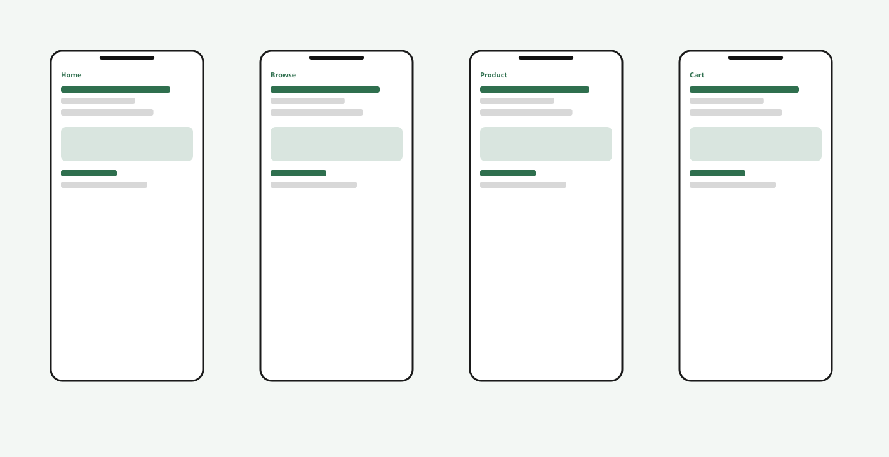
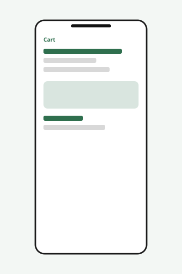
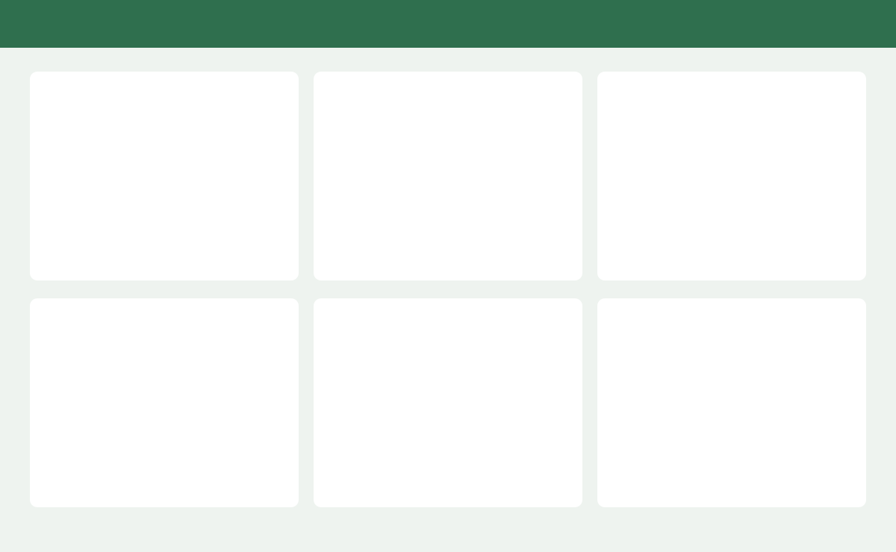

UX / UI · 2024
An E-commerce Platform
Redesigning a shopping experience to make browsing, checkout, and account management more seamless and user-centric.

[Image: 4 mobile screens from the final shopping experience]
Overview
This project was for an e-commerce platform that sells everyday products online. The goal was to create a more intuitive experience for customers as they browse, add items to their cart, and complete checkout. I worked as the product designer on a small cross-functional team.
The problem
Users were having trouble with the current shopping experience. Feedback suggested the flow could be more user-friendly and that some parts of the journey felt inconsistent. We were asked to improve the end-to-end experience, with a focus on home, product, cart, and checkout.
The primary user we designed for is Sarah, 28, a busy professional who shops on her phone in short sessions and wants a seamless experience.
Research
We conducted user interviews and sent out a survey. We also reviewed the existing product and looked at other e-commerce platforms. Insights were documented in a research deck and shared with the team.

[Image: affinity mapping from interview notes]

[Image: persona — Sarah, 28, busy professional]
A journey map was created to visualize the current path from landing on the site to completing an order.

[Image: current-state user journey map]
Define
We defined a problem statement around making the shopping experience more intuitive. How-might-we prompts were written for browsing, product detail, cart, and checkout. Design principles were documented: clear, consistent, and user-centric.
Ideation
The team sketched a range of layout options for home, product, and checkout. Ideas were clustered and reviewed. Wireframes were created for the core flow.

[Image: low-fidelity wireframes for home, product, and checkout]
Design
High-fidelity screens were designed in Figma. A small component set was built for buttons, product cards, inputs, and navigation. The visual system used a green accent, lots of product imagery, and a clean layout.
Screens designed included home, browse, product detail, cart, checkout, order confirmation, and account.

[Image: 6 mobile screens in a grid]

[Image: desktop product grid]
A clickable prototype was assembled covering the happy path from home to confirmation.
Testing
Usability tests were run with the prototype. Participants were asked to find a product, add it to the cart, and check out. Notes were taken and a few labels and spacing updates were made afterward.
[Image: product detail and checkout after testing]
Outcome
The final screens, prototype, and component file were handed over to engineering. The final design was well received.